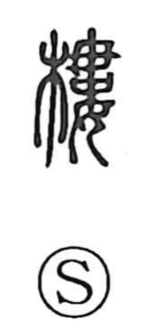

楼

Uncategorized
Kun: takadono | On: rou
multi-story building ・ tower ・ watchtower
Explanation
This is a phono-semantic character whose original form is 樓, with 婁 (rō) as the phonetic element. 婁 depicts a woman’s hair piled up and fastened with an ornamental pin, and carries the sense of being heaped up layer upon layer. From that image, 楼 came to mean a structure built in stacked tiers—a tall pavilion or tower, including watchtowers. In ancient times such towers were erected as sacred buildings to welcome the gods; later they acquired political and military functions.